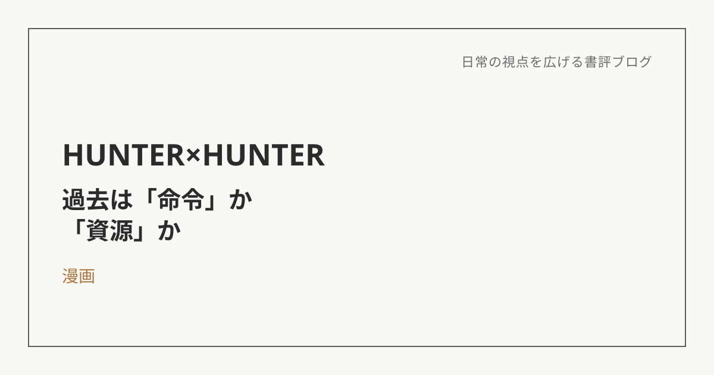

HUNTER×HUNTER――過去は「命令」か、「資源」か
この本について
『HUNTER×HUNTER』（冨樫義博）は、ハンターという資格を持つ主人公ゴンが、失踪した父を探す旅を通じて、さまざまな人間関係や試練に直面していく少年漫画だ。単なるバトル漫画にとどまらず、登場人物一人ひとりの内面や生き方が丁寧に描かれていることで知られている。今回はこの作品を、アドラー心理学でいう「原因論」と「目的論」という視点のフィルターを通して、あらためて解釈してみようと思う。
「念」という力の仕組みを、目的論として読み解いてみる
この作品を語るうえで欠かせないのが、「念能力」という独自の力の設定だ。多くの少年漫画では、力の強さは「特別な血筋だから」「特殊な実を食べたから」といった、過去の出自（原因）によって説明されることが多い。ところが『HUNTER×HUNTER』の念能力、特に「制約と誓約」という仕組みは違う。クラピカは「旅団以外には使わない」という未来への誓いを立てることで強大な力を得るし、ゴンは「二度と念が使えなくなってもいい」という覚悟を選ぶことで、一時的に絶大な力を手にする。力を決めているのは過去の血統ではなく、「何のために、何を差し出す覚悟があるか」という、その人自身の意志なのだ。物語の力の仕組みそのものを、目的論的な発想として読み解くことができる。
過去を「命令」にする生き方、「資源」にする生き方
登場人物たちの生き方を見ていくと、同じ「過去に影響を受けている」状態でも、まったく違う二つのパターンが見えてくる。
クラピカは、一族を虐殺された過去を晴らすために復讐に生きている。一見すると自分の意志で目的を選んでいるように見えるが、その目的自体が過去の出来事にそのまま支配されている。過去が「命令」となり、行動がほとんど反射のようになってしまっている状態だ。
一方、レオリオは友人の死をきっかけに医者を目指すようになった。同じように過去に背中を押されているが、彼は過去を「命令」ではなく「資源」として扱っている。「友人が死んだ」という事実を、そのまま絶望に変換するのではなく、「だから自分は人を救う」という自分の意志による選択に変えている。過去に影響されることと、過去に支配されることは、似ているようでまったく違う。
生まれつき自由な人と、そこへ向かっていく人
ジンとゴンの親子は、そもそも過去にあまり縛られていないタイプとして描かれる。「父親がいない」という事実を嘆くのではなく、「父親を探す過程そのものを楽しむ」という選び方をしている。
一方、キルアは対照的だ。物語の序盤、彼は兄からの命令という、いわば過去からの支配に強く縛られていた。しかし自らその支配を断ち切り、「ゴンと一緒にいたい」「妹と生きていきたい」という自分自身の目的を選び取っていく。生まれつき自由な人もいれば、支配から自由になっていく過程そのものを歩む人もいる。自分にとって親しみを感じるのは、後者の方だった。
身近な漫画で読み解くと、理解の解像度が上がる
実はこの「原因論」「目的論」という考え方自体は、以前この書評ブログでも取り上げた『嫌われる勇気』で、すでに一度出会っていた概念だった。ただ、抽象的な理論として説明されるよりも、自分がよく知っている『HUNTER×HUNTER』の登場人物たちの選択や葛藤を通して見る方が、概念の解像度がぐっと上がる感覚があった。同じ考え方でも、身近で愛着のある作品に置き換えて再解釈することで、理解がより深いところまで届くのだと思う。
過去を、何度でも選び直すということ
過去を「資源」として扱い、自分の意志で選び直すという生き方は、一度理解すれば終わり、というものではないのだと思う。忙しさやプレッシャーが重なる場面では、つい過去の出来事に気持ちごと引きずられてしまうこともある。それ自体は特別なことではなく、誰にでも起こりうる自然な反応なのだと思う。大事なのは、そのたびに一度立ち止まり、自分が本当は何を大事にしたいのかを確かめ直すことだ。反射的に動くのではなく、同じような場面に何度出会っても、そのつど自分の意志で選び直せること。『HUNTER×HUNTER』の登場人物たちのように、過去を命令ではなく資源として扱い続けることは、一度達成して終わるものではなく、何度でも選び直していくプロセスなのだと思う。
※本記事はNotionに書き溜めた読書メモをもとに、AIの編集サポートを受けて構成しています。